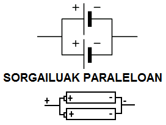
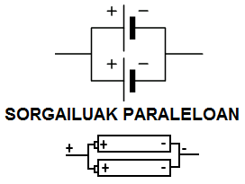
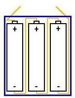
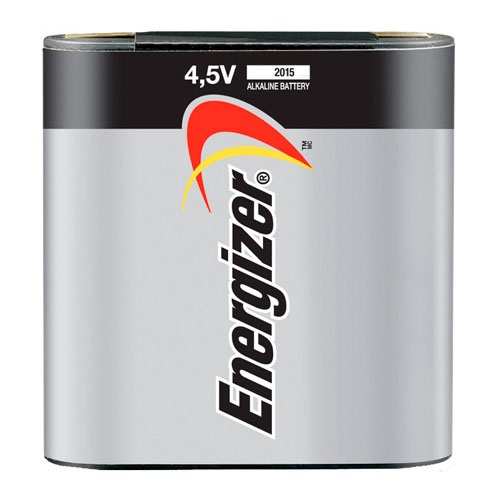

KORRONTE ELEKTRIKOA (3/3)
3. KONEXIO ELEKTRIKO MOTAK
IKASI:
Batzuetan, zenbait hargailu jarri behar dira zirkuitu berean, eta hori bi modutara egin daiteke: hargailuak seriean jarrita, alegia bata bestearen ondoren; edo paraleloan jarrita. Batzuetan, gainera, zirkuitu berean, paraleloan adina konexio dago seriean, eta, hala denean, konexio mistoa esaten diogu. Zirkuituaren portaera aldatu egiten da, hargailuen konexio motaren arabera; batzuetan, egokiagoa izango da serieko konexioa egitea; beste batzuetan, paraleloko konexioa egitea; eta, beste hainbatetan, konexio mistoak egitea.
Hargailu bakoitzetik igarotzen den korrontea bera da.
Tentsio totala hargailu bakoitzaren tentsioen batuketa da.
Hargailu bakoitzaren tentsioa bera da.
Hargailu bakoitzetik zirkulatzen duen intentsitatea diferentea da.
Serieko hargailuen korrontea ez da aldatzen.
Paraleloko hargailuen tentsioa ez da aldatzen.
Ikusi, hurrengo animazioaren bidez, nola funtzionatzen duen serieko zirkuitu batek, paraleloko batek eta beste misto batek, eta aztertu konexio mota horien artean zein desberdintasun dauden: Zirkuitu baten konexioak.
Batzuetan, halaber, sorgailuak jartzen dira seriean edo paraleloan. Bi sorgailu edo gehiago seriean daude, bata bestearen ondoren doazenean. Sorgailu baten borne positiboak beste sorgailu baten borne negatibora konektatuta joan behar du. Bi sorgailuetako tentsioak gehitzen dira.
Eta bi sorgailu edo gehiago paraleloan daude, polaritate bereko borneak elkarri konektatuta daudenean. Kasu horretan, tentsio bera ematen diote zirkuituari, baina intentsitate handiagoa ematen dute.
 

 
Adibide honetan, 4,5 V-ko pila dugu, eta seriean konektatuta dauden 1,5 V-ko 3 pilek osatzen dutela ikus daiteke bere baitan.
 JARRI PRAKTIKAN:
JARRI PRAKTIKAN:
 Egizu klik hemen ariketa batzuk egiteko
Egizu klik hemen ariketa batzuk egiteko